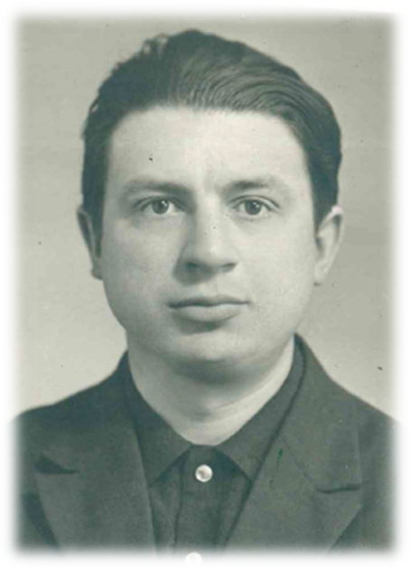

Борисенко
Трофим
Трофимович
Трофим Трофимович принят в депо в 1959 году разнорабочим. Через год обучился
профессии слесаря и работал в должности до призыва на службу в Советской Армии.
В депо вернулся в 1971 году в цех точных приборов слесарем по ремонту подвижного
состава, где проработал до выхода на заслуженный отдых (2005 год).
Неоднократно награждался за разработку и внедрение рацпредложений, изобретательство,
высокопроизводительный труд и выполнение плановых заданий.
Трофим Трофимович – грамотный специалист, принимавший активное участие в освоении
новых технологий. Имеет большой практический опыт работы, хорошо знает оборудование и
специфику ремонта.
Занесен в Книгу Почёта в 2024 году